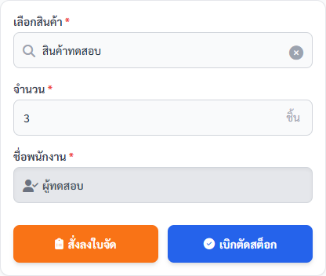
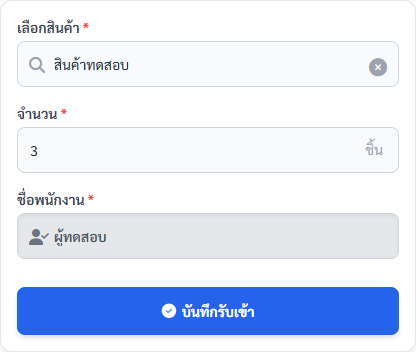
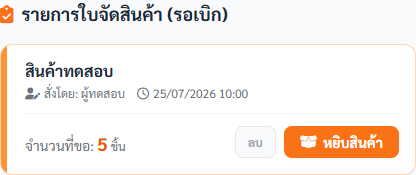
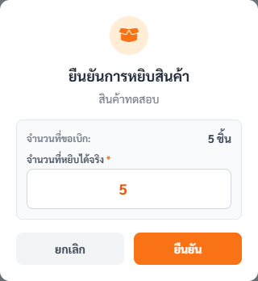
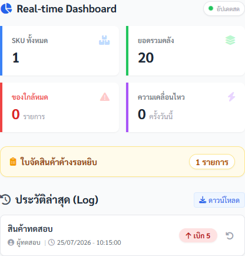
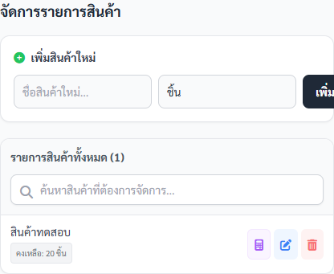
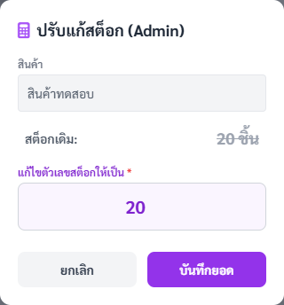

คู่มือพนักงาน · AKRA W5 — จัดการสต็อกคลัง W5
คู่มือเบิก รับเข้า และจัดสินค้าคลัง W5
บันทึกเบิกออก รับเข้า หรือใบจัดสินค้า W5 ให้ยอดคงเหลือและประวัติตรงของจริง พร้อมแยกคำสั่งปรับยอดและแก้ Master ออกจากงานปกติ
ฉบับทดสอบภายใน: ใช้ตรวจขั้นตอนและความเข้าใจก่อนประกาศใช้
ส่วนที่ 1
เตรียมก่อนเริ่ม
- เปิด AKRA W5 ผ่าน Main Portal และตรวจชื่อพนักงานบนหัวจอ
- เตรียมชื่อสินค้า จำนวน และเลือกว่าจะตัดสต็อกทันทีหรือสั่งลงใบจัด
- ตรวจสต็อกปัจจุบันก่อนเบิก และนับของจริงก่อนรับเข้าหรือยืนยันหยิบ
- การ Undo ปรับสต็อก หรือแก้ข้อมูลสินค้าใช้เมื่อหัวหน้าหรือผู้รับผิดชอบอนุมัติ
เลือกเส้นทางจากข้อความที่เห็น
| ข้อความบนหน้าจอ | ความหมาย | ให้ทำต่อ |
|---|---|---|
| ต้องการตัดยอดออกทันที | มีการเบิกของจริงพร้อมบันทึก | เลือก “เบิกออก” แล้วใช้ “เบิกตัดสต็อก” |
| ต้องเตรียมของให้ผู้หยิบภายหลัง | ยังไม่ตัดสต็อกจนกว่าจะยืนยันยอดหยิบจริง | เลือก “เบิกออก” แล้วใช้ “สั่งลงใบจัด” |
| รับสินค้าเข้าคลัง W5 | เพิ่มยอดคงเหลือทันทีเมื่อยืนยัน | เลือก “รับเข้า” แล้วใช้ “บันทึกรับเข้า” หลังตรวจของจริง |
ส่วนที่ 2
ทำตามขั้นตอน
-
พนักงานคลัง W5
เลือกสินค้ากับวิธีเบิก
ทำ: ใน “ทำรายการ เบิก / รับเข้า” เลือก “เบิกออก” ค้นหาสินค้าจากรายการ ใส่จำนวนมากกว่า 0 แล้วเลือก “สั่งลงใบจัด” หรือ “เบิกตัดสต็อก” ให้ตรงงาน
เช็ก: ชื่อสินค้า จำนวน หน่วย และชื่อพนักงานครบ; ยอดคงเหลือแสดงให้ตรวจเทียบก่อนทำรายการ

สองปุ่มมีผลต่างกัน: ตัดสต็อกทันที หรือรอยืนยันยอดหยิบจริงในใบจัด ภาพอ้างอิง AKRA-W5 20260611.02 -
พนักงานคลัง W5
รับสินค้าเข้าคลัง
ทำ: เลือก “รับเข้า” เลือกสินค้าจากรายการ ใส่จำนวนที่ตรวจรับจริง แล้วกด “บันทึกรับเข้า”; อ่านหน้าต่างยืนยันก่อนกด “ยืนยัน”
เช็ก: ยอดสินค้าคงเหลือเพิ่มตามจำนวน และประวัติแสดงประเภท “รับเข้า” กับชื่อผู้ทำรายการ

รับเข้าเพิ่มสต็อกทันทีหลังยืนยัน จึงต้องใช้ยอดของจริงเท่านั้น ภาพอ้างอิง AKRA-W5 20260611.02 -
ผู้สร้างใบจัด
ส่งงานไปใบจัด
ทำ: เมื่อยังไม่ต้องตัดยอดทันที ให้กด “สั่งลงใบจัด” แล้วเปิดแท็บ “ใบจัด” เพื่อตรวจชื่อสินค้า จำนวนที่ขอ ผู้สั่ง และเวลา
เช็ก: รายการขึ้นใน “รายการใบจัดสินค้า (รอเบิก)” และยังไม่ลดสต็อกจนกว่าจะยืนยันการหยิบ

ใบจัดเป็นคิวรอหยิบ ไม่ใช่หลักฐานว่าตัดสต็อกแล้ว ภาพอ้างอิง AKRA-W5 20260611.02 -
พนักงานหยิบสินค้า
ยืนยันยอดที่หยิบได้จริง
ทำ: กด “หยิบสินค้า” ที่รายการเดิม ตรวจจำนวนที่ขอ แล้วกรอก “จำนวนที่หยิบได้จริง” มากกว่า 0 ก่อนกด “ยืนยัน”
เช็ก: ระบบตัดสต็อกตามยอดหยิบจริง ลบรายการออกจากคิว และเพิ่มประวัติ “เบิกออก”

ตัดยอดตามจำนวนที่หยิบได้จริง ไม่ใช่จำนวนที่ขอโดยอัตโนมัติ ภาพอ้างอิง AKRA-W5 20260611.02 -
พนักงานคลัง W5
ตรวจยอดและประวัติ
ทำ: เปิด “แดชบอร์ด” ตรวจ SKU ทั้งหมด ยอดรวม ของใกล้หมด ใบจัดค้าง และ “ประวัติล่าสุด (Log)” หลังทำรายการ
เช็ก: พบรายการล่าสุดพร้อมประเภท เบิก/รับ จำนวน ผู้ทำรายการ และเวลา; คิวใบจัดคงเหลือตรงกับงานจริง

ใช้ Dashboard และ Log เป็นจุดตรวจสุดท้ายก่อนจบงานหรือทำรายการใหม่ ภาพอ้างอิง AKRA-W5 20260611.02 -
หัวหน้าหรือผู้ดูแลที่ได้รับมอบหมาย
ดูแลสินค้าและปรับยอดเมื่อมีหลักฐาน
ทำ: ใน “จัดการ” ค้นหารายการเดิมก่อนเพิ่ม/แก้/ลบสินค้า; ใช้ปุ่มปรับสต็อกเมื่อยอดนับจริงไม่ตรง และตรวจยอดเดิมกับยอดใหม่ก่อนบันทึก
เช็ก: Master Product ไม่มีรายการซ้ำ และประวัติแสดง “ปรับสต็อก” พร้อมยอดเดิม ยอดใหม่ และผู้ทำรายการ

เมนูจัดการเปลี่ยน Master และยอดสต็อก ใช้เฉพาะผู้ได้รับมอบหมาย ภาพอ้างอิง AKRA-W5 20260611.02
ส่วนที่ 3
เช็กก่อนจบงาน
งานเสร็จเมื่อครบทั้ง 5 ข้อ
- ชื่อสินค้า จำนวน หน่วย และชื่อผู้ทำรายการตรงของจริง
- เบิกตัดสต็อกไม่เกินยอดคงเหลือ
- ใบจัดถูกตัดยอดเมื่อยืนยันจำนวนที่หยิบจริงแล้วเท่านั้น
- พบรายการล่าสุดใน Dashboard/Log และยอดคงเหลือเปลี่ยนตามประเภทงาน
- การปรับยอดหรือแก้ Master มีผู้รับผิดชอบและหลักฐานรองรับ
ส่วนที่ 4
แก้ปัญหาที่พบบ่อย
เลือกข้อความที่ตรงกับหน้าจอ แล้วทำตามทีละข้อ
ระบบแจ้ง “สต็อกไม่พอ!” ตอนเบิกตัดสต็อก
- อย่าฝืนทำรายการหรือเปลี่ยนยอดโดยไม่มีหลักฐาน
- ตรวจชื่อสินค้าและนับของจริง
- ถ้าเป็นแผนจัดล่วงหน้า ให้ใช้ “สั่งลงใบจัด” และยืนยันยอดหยิบจริงภายหลัง
ระบบเตือนว่าสต็อกอาจไม่พอตอนสั่งลงใบจัด
- อ่านข้อความและตรวจว่าต้องการวางแผนจัดของล่วงหน้าจริงหรือไม่
- ถ้าไม่แน่ใจให้ยกเลิกและแจ้งหัวหน้า
- หากดำเนินต่อ ต้องยืนยันยอดหยิบจริงในใบจัด ห้ามถือยอดที่ขอเป็นยอดตัดแล้ว
กดบันทึกแล้วเชื่อมต่อผิดพลาดหรือไม่แน่ใจว่าบันทึกสำเร็จ
- อย่ากดซ้ำทันที
- เปิด Dashboard และ “ประวัติล่าสุด (Log)” ตรวจรายการเดิม
- ถ้าไม่พบผลหรือยอดไม่ชัดเจน ให้หยุดและแจ้งหัวหน้า
เห็นข้อความมีเวอร์ชันใหม่หรือโหมดออฟไลน์
- อย่าบันทึกจากหน้าเก่า
- รีโหลดหรือกลับเข้าใหม่ผ่าน Main Portal
- ตรวจ Dashboard/Log ก่อนทำรายการต่อ
ต้อง Undo รายการ
- ตรวจประเภท รับเข้า/เบิกออก ชื่อสินค้า จำนวน และรายการล่าสุดให้ตรง
- ให้หัวหน้าหรือผู้รับผิดชอบยืนยันก่อนใช้ปุ่ม Undo เพราะระบบทำรายการย้อนกลับเพื่อคืนยอด
- ตรวจ Log ใหม่หลังดำเนินการ
ยอดระบบไม่ตรงของจริงและต้องใช้ “ปรับแก้สต็อก (Admin)”
- นับของจริงซ้ำและเตรียมเหตุผลหรือหลักฐาน
- ตรวจ “สต็อกเดิม” และกรอกยอดใหม่เป็นจำนวนเต็มที่ไม่ติดลบ
- ให้ผู้ได้รับมอบหมายตรวจแล้วจึงกด “บันทึกยอด”

- ระบบแจ้ง “สต็อกไม่พอ!” ตอนเบิกตัดสต็อก
-
- อย่าฝืนทำรายการหรือเปลี่ยนยอดโดยไม่มีหลักฐาน
- ตรวจชื่อสินค้าและนับของจริง
- ถ้าเป็นแผนจัดล่วงหน้า ให้ใช้ “สั่งลงใบจัด” และยืนยันยอดหยิบจริงภายหลัง
- ระบบเตือนว่าสต็อกอาจไม่พอตอนสั่งลงใบจัด
-
- อ่านข้อความและตรวจว่าต้องการวางแผนจัดของล่วงหน้าจริงหรือไม่
- ถ้าไม่แน่ใจให้ยกเลิกและแจ้งหัวหน้า
- หากดำเนินต่อ ต้องยืนยันยอดหยิบจริงในใบจัด ห้ามถือยอดที่ขอเป็นยอดตัดแล้ว
- กดบันทึกแล้วเชื่อมต่อผิดพลาดหรือไม่แน่ใจว่าบันทึกสำเร็จ
-
- อย่ากดซ้ำทันที
- เปิด Dashboard และ “ประวัติล่าสุด (Log)” ตรวจรายการเดิม
- ถ้าไม่พบผลหรือยอดไม่ชัดเจน ให้หยุดและแจ้งหัวหน้า
- เห็นข้อความมีเวอร์ชันใหม่หรือโหมดออฟไลน์
-
- อย่าบันทึกจากหน้าเก่า
- รีโหลดหรือกลับเข้าใหม่ผ่าน Main Portal
- ตรวจ Dashboard/Log ก่อนทำรายการต่อ
- ต้อง Undo รายการ
-
- ตรวจประเภท รับเข้า/เบิกออก ชื่อสินค้า จำนวน และรายการล่าสุดให้ตรง
- ให้หัวหน้าหรือผู้รับผิดชอบยืนยันก่อนใช้ปุ่ม Undo เพราะระบบทำรายการย้อนกลับเพื่อคืนยอด
- ตรวจ Log ใหม่หลังดำเนินการ
- ยอดระบบไม่ตรงของจริงและต้องใช้ “ปรับแก้สต็อก (Admin)”
-
- นับของจริงซ้ำและเตรียมเหตุผลหรือหลักฐาน
- ตรวจ “สต็อกเดิม” และกรอกยอดใหม่เป็นจำนวนเต็มที่ไม่ติดลบ
- ให้ผู้ได้รับมอบหมายตรวจแล้วจึงกด “บันทึกยอด”
การปรับยอดเป็นคำสั่งแก้ไขโดยตรง ต้องมีผลนับจริง เหตุผล และผู้รับผิดชอบ ภาพอ้างอิง AKRA-W5 20260611.02
ส่วนที่ 5
หยุดและแจ้งหัวหน้าเมื่อ
- ไม่แน่ใจว่าจะตัดสต็อกทันทีหรือส่งเข้าใบจัด
- ยอดของจริงไม่ตรงระบบ หรือรายการล่าสุดไม่ปรากฏใน Log
- ต้อง Undo ปรับยอด เพิ่ม แก้ หรือลบ Master Product โดยไม่ได้รับมอบหมาย
- หน้าเป็นเวอร์ชันเก่า ออฟไลน์ หรือไม่สามารถยืนยันผลบันทึก